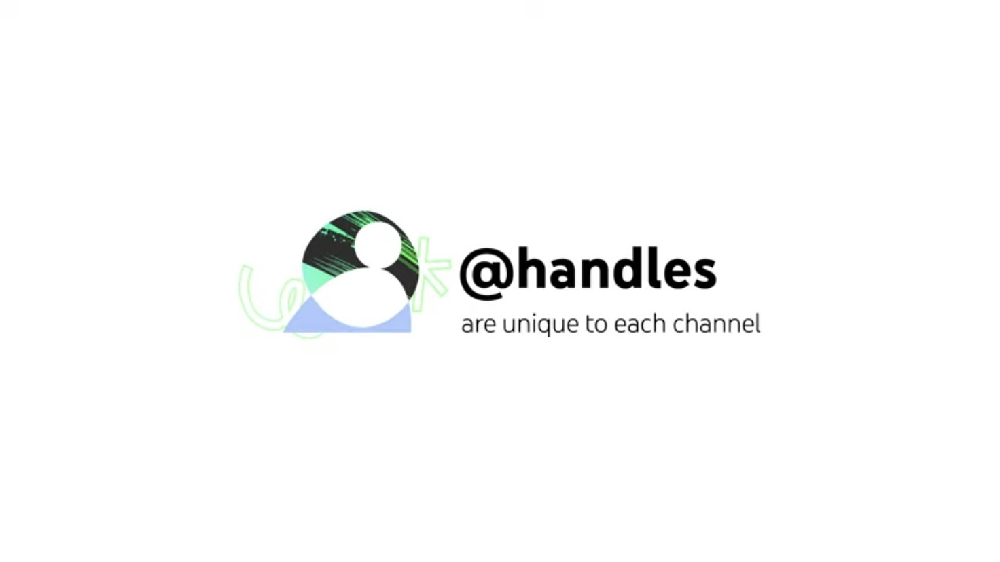
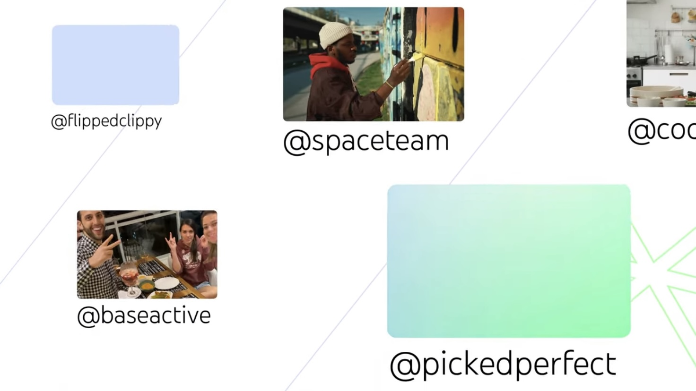

ハンドル
YouTubeは10月11日にYouTubeクリエイターより新機能の「ハンドル」を実装することを発表した。
ハンドルとは

ハンドルとは＠で始まる固有のユーザーネームです。TwitterやInstagramではおなじみの機能ですね。YouTubeではいままで限定されたクリエイターのみしか利用できませんでしたが、今回すべてのユーザーが設定できるようになります。
このハンドルは他のSNSのように全ての場所に名前と一緒に表示されます。チャンネル内でも、Shortsでも、検索でも、コメントでも確認できます。
この機能のおかげで、本物のアカウントかどうかを見分けるのが容易になります。またメンションが容易になるためコラボした際などに概要欄の記載量が減り、きれいに収まるようになります。
ハンドルの設定方法

ハンドルは今後数週間で段階的にすべてのユーザーが設定できるようになります。設定できるようになった時にはメールとYouTubeスタジオに通知が届きます。
3文字から30文字以内のアルファベット、数字、アンダースコア、ハイフン、ピリオドが設定できます。URLや電話番号に見えてはいけなく、YouTubeのコミュニティガイドラインに準じている必要があります。
11月14日までに設定していなかった場合は自動で設定できます。
しかし現在登録者100人を超えていてカスタムURLを設定しているクリエイターは既にカスタムURLで設定した文字で設定されています。設定可能の知らせがきた際に変更が可能です。現在カスタムURLは設定も削除も変更もできなくなっています。カスタムURLで2文字以下で設定しているクリエイターはハンドルでも例外的に2文字になっています。
URLについて
ハンドルがそのままURLになります。例えばハンドルが＠Appleだった場合、https://youtube.com/＠apple になります。全てのユーザーが美しいURLを使用できるようになります。
また既存のカスタムURLを所持している方は今後もリダイレクトされ続けます。